วงจรแลทช์ และฟลิปฟลอป
🎯 จุดประสงค์ของบทเรียน
- สามารถใช้เกทในการสร้างวงจรแลทช์พื้นฐาน
- อธิบายความแตกต่างระหว่าง S-R latch กับ D latch ได้
- เข้าใจความแตกต่างระหว่างแลทช์กับฟลิปฟลอป
- อธิบายได้ว่า S-R FF, D FF และ J-K FF ต่างกันอย่างไร
- สามารถประยุกต์ใช้ฟลิปฟลอปสำหรับงานพื้นฐานต่าง ๆ ได้
🧭 ความเชื่อมโยงกับ มคอ.3
CLO5 อธิบายการทำงานของวงจรตรรกะพื้นฐานทั้งแบบวงจรผสมและวงจรเชิงลำดับในการนำไปใช้เป็นองค์ประกอบของระบบคอมพิวเตอร์
CLO8 เลือกเกทพื้นฐานที่เหมาะสมสำหรับสร้างวงจรขนาดเล็กเพื่อการใช้งานตามวัตถุประสงค์
กิจกรรม: บรรยาย / PBL · สัปดาห์ที่ 10: วงจรแลทช์ · สัปดาห์ที่ 11: edge-triggered flip-flop · ปฏิบัติการ: ฟลิปฟลอปและวงจรหารความถี่
การประเมิน: แบบฝึกหัดและรายงานผลการทดลอง (20%) · สอบปลายภาค (30%)
8.1 วงจรแลทช์ (Latch)
วงจรแลทช์เป็นอุปกรณ์ที่ใช้ในการจัดเก็บข้อมูลแบบชั่วคราว (temporary storage) ซึ่งมีสถานะเสถียรภาพอยู่ 2 สถานะ (เรียกว่า bistable) โดยมีลักษณะการทำงานคล้ายกับฟลิปฟลอปที่เป็น bistable ที่สามารถคงอยู่ในสถานะใดสถานะหนึ่งด้วยการใช้การป้อนสัญญาณกลับ (feedback) โดยการนำเอาเอาต์พุตที่ได้ย้อนกลับมาป้อนเข้ายังขาอินพุตตรงกันข้าม แต่ความแตกต่างหลักระหว่างแลทช์กับฟลิปฟลอปนั้นจะอยู่ที่วิธีการที่ใช้สำหรับการเปลี่ยนแปลงสถานะการทำงาน ซึ่งจะกล่าวถึงต่อไปในรายละเอียดภายหลัง
8.1.1 S-R (Set-Reset) Latch
แลทช์เป็นอุปกรณ์ลอจิกแบบ bistable หรือที่เรียกว่า multivibrator สำหรับ S-R latch แบบ active-HIGH นั้นสามารถสร้างโดยการใช้ NOR gate มาต่อไขว้กันดังรูปที่ 8.1 (ก) ส่วน S-R latch แบบ active-LOW นั้นจะใช้ NAND gate ต่อแบบไขว้กันดังรูปที่ 8.1 (ข) ให้สังเกตว่าเอาต์พุตของเกทหนึ่งจะต่อเข้ากับอินพุตของเกทอีกตัวหนึ่ง ซึ่งเราเรียกลักษณะนี้ว่าการป้อนกลับ (feedback) ซึ่งเป็นคุณลักษณะของวงจรแลทช์และฟลิปฟลอปทั้งหมด


ทั้งสองวงจรนี้จะมีสัญลักษณ์ลอจิกแสดงไว้ในรูปที่ 8.2 ให้สังเกตที่ขาอินพุตของแลทช์แต่ละตัวที่เขียนต่างกันระหว่าง active-HIGH กับ active-LOW เพื่อเป็นการบ่งให้เห็นความแตกต่าง
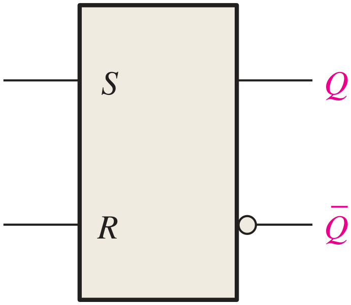
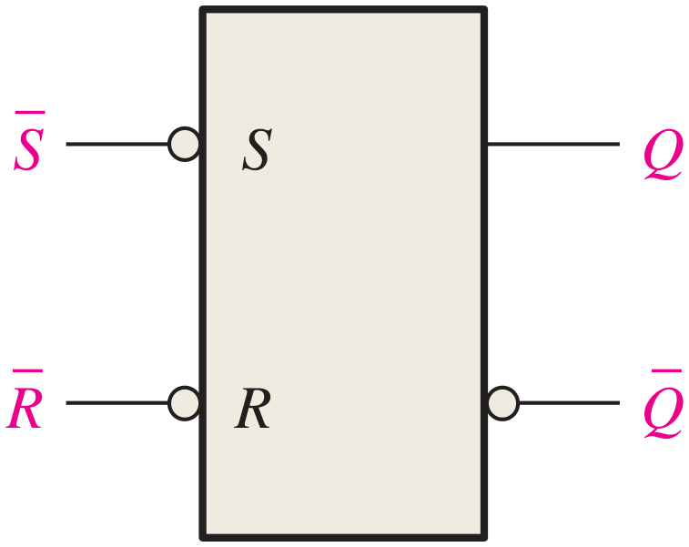
สำหรับการทำงานของวงจรแลทช์ทั้งสองแบบนั้นสามารถสรุปได้ดังตารางที่ 8.1 สำหรับ S-R latch ที่มีอินพุตแบบ active-HIGH และตารางที่ 8.2 สำหรับ S-R latch ที่มีอินพุตแบบ active-LOW
| อินพุต | เอาต์พุต | ความหมาย | ||
|---|---|---|---|---|
| S | R | Q | Q | |
| 0 | 0 | NC | NC | ไม่มีการเปลี่ยนแปลง แลทช์คงสภาวะปัจจุบัน |
| 0 | 1 | 0 | 1 | แลทช์อยู่สภาวะ RESET |
| 1 | 0 | 1 | 0 | แลทช์อยู่สภาวะ SET |
| 1 | 1 | 0 | 0 | สภาวะที่ไม่ถูกต้อง (Invalid) |
| อินพุต | เอาต์พุต | ความหมาย | ||
|---|---|---|---|---|
| S | R | Q | Q | |
| 1 | 1 | NC | NC | ไม่มีการเปลี่ยนแปลง แลทช์คงสภาวะปัจจุบัน |
| 0 | 1 | 1 | 0 | แลทช์อยู่สภาวะ SET |
| 1 | 0 | 0 | 1 | แลทช์อยู่สภาวะ RESET |
| 0 | 0 | 1 | 1 | สภาวะที่ไม่ถูกต้อง (Invalid) |
วงจรทั้งสองมีความแตกต่างกันที่ขาอินพุต แต่สิ่งสำคัญจะถูกบ่งเอาไว้ในชื่อของแลทช์ ตัวย่อ S มาจาก SET ซึ่งหมายถึงการ set ให้เอาต์พุต Q มีค่าเป็น 1 เมื่อขา S เป็น “active” และ R มาจาก RESET ซึ่งเมื่อขานี้ถูก “active” เมื่อใดก็จะให้เอาต์พุต Q มีค่าเป็น 0 คำว่า active ในที่นี้ถ้าเป็น active-HIGH หมายถึงว่าให้ป้อนอินพุตเป็น 1 แต่ถ้าเป็น active-LOW จะหมายถึงต้องป้อนอินพุตให้เป็น 0
เมื่อกล่าวถึงเอาต์พุต เราจะเห็นว่ามีทั้ง Q และ Q ซึ่งจะเห็นว่าสองขานี้จะมีค่าที่ตรงกันข้ามเสมอ เว้นแต่ว่ากรณีที่เป็น invalid สองขานี้จะมีพฤติกรรมที่ไม่ตรงกับที่ระบุเอาไว้ (พิจารณาจากตารางทั้งสองด้านบน) ซึ่งกรณี invalid นี้เองที่เป็นจุดบกพร่องของวงจรแลทช์ ตัวอย่างต่อไปจะเห็นการทำงานของวงจรแลทช์ที่ทำงานกับสัญญาณที่ป้อนเข้ายังอินพุตทั้งสองของ S-R latch ที่มีอินพุตแบบ active-LOW
ถ้าสัญญาณ S และ R เป็นดังผังเวลาตามรูปข้างล่าง เมื่อป้อนเข้าที่ S-R latch ที่มีอินพุตแบบ active-LOW แล้วจะได้ผลลัพธ์ที่ขาสัญญาณ Q เป็นอย่างไร สมมติว่าสัญญาณ Q เริ่มต้นเป็น LOW

แสดงวิธีทำ
การพิจารณาให้ดูการเปลี่ยนแปลงของสัญญาณอินพุตแต่ละตัว เมื่อมีการเปลี่ยนแปลงของ S ซึ่งเปลี่ยนจาก 1 เป็น 0 เป็นการ enable ขา S ทำให้เกิดสภาวะ SET จึงทำให้ Q เป็น 1 แต่เมื่อ S เปลี่ยนกลับเป็น 1 ผลลัพธ์ของ Q จะคงสภาพเดิมไม่เปลี่ยนแปลงไป (เนื่องจากทั้ง S และ R เป็น 1 ทั้งคู่) จนกระทั่งขา R มีการเปลี่ยนจาก 1 เป็น 0 ซึ่งเป็นการ enable ขา R อันเป็นการทำให้เกิดสภาวะ RESET ซึ่งทำให้เอาต์พุต Q มีค่าเป็น 0 และจะดำเนินการอย่างนี้ไปตามเงื่อนไขการเปลี่ยนแปลงของขาอินพุตทั้งสองนี้ อย่างไรก็ตามในผังเวลานี้ไม่มีกรณีที่เป็น invalid เกิดขึ้น เนื่องจาก S และ R ไม่เคยเป็น 0 พร้อมกัน
8.1.2 วงจร Gated S-R Latch
เป็นการเพิ่มขาควบคุมการทำงานของวงจรแลทช์ขึ้นมา เรียกขานี้ว่าขา EN โดยการใช้วงจรเกทมาขวางเอาไว้ดังรูปที่ 8.3 (ก) ที่แสดงผังวงจรลอจิกของ gated S-R latch ซึ่งจะมีสัญลักษณ์ของวงจรดังกล่าวนี้แสดงให้เห็นใน (ข) การทำงานของวงจรนี้จะเหมือนกับ S-R latch ธรรมดาเมื่อสัญญาณที่ขา EN เป็น 1 (เนื่องจากเป็นอินพุตแบบ active-HIGH) แต่เมื่อขา EN เป็น 0 เมื่อใดนั้น เอาต์พุตที่ได้จะไม่มีการเปลี่ยนสถานะใด ๆ จากเวลาก่อนหน้านี้ ดูได้จากผังเวลาตัวอย่าง (ค) เพื่อประกอบความเข้าใจ


8.1.3 วงจร Gated D Latch
วงจรนี้มีความแตกต่างจาก gated S-R latch ที่ได้กล่าวไปในหัวข้อที่แล้ว คือขาสัญญาณอินพุต (ไม่นับขา EN) จะมีเพียงขาเดียวที่ชื่อ D (มาจากคำว่า Data Input) รูปที่ 8.4 เป็นการแสดงผังวงจร สัญลักษณ์ และผังเวลาตัวอย่างที่แสดงการทำงานของวงจร ให้พิจารณาจาก (ก) ว่าตามจริงแล้ววงจร gated D latch นั้นเหมือนกับวงจร gated S-R latch เพียงแต่สัญญาณขาเข้าแทนที่จะบ่งว่าเป็น S กับ R กลับเป็นขา D ซึ่งต่อตรงแทน S ในขณะที่นำเอา inverter มาวางไว้เพื่อทำการกลับบิต D แล้วป้อนแทนที่ R ดังนั้นขา S กับ R เดิมจะไม่เคยเป็นสัญญาณเดียวกันเลยจากลักษณะการเชื่อมต่อวงจรดังกล่าว ดูส่วนผังสัญญาณแสดงการทำงานใน (ค) เพื่อประกอบความเข้าใจ และอภิปรายเกี่ยวกับตัวอักษร D ที่มาจากคำว่า Data Input ว่ามีความหมายอย่างไร


8.2 วงจร Edge-Triggered Flip-Flop
ฟลิปฟลอปเป็นอุปกรณ์ที่เป็น synchronous bistable ซึ่งคำว่า synchronous หมายถึงการที่เอาต์พุตจะมีการเปลี่ยนแปลงสภาวะก็ต่อเมื่อถึงจุดเวลาหนึ่งเวลาใดของอินพุต CLK ซึ่งเป็นสัญญาณนาฬิกาในการควบคุมการทำงานตามจังหวะการทำงานที่สอดคล้องกัน
Edge-triggered flip-flop นั้นจะเป็นการที่เอาต์พุตของวงจรจะมีการเปลี่ยนแปลงสถานะตามเงื่อนไขของอินพุตที่กำหนด ณ ช่วงเวลาขอบขาขึ้น (positive edge หรือ rising edge) หรือช่วงเวลาขอบขาลง (negative edge หรือ falling edge) ของลูกคลื่นสัญญาณนาฬิกา ในที่นี้จะกล่าวถึงฟลิปฟลอปแบบ edge-triggered อยู่ 3 ประเภท ได้แก่
- S-R flip-flop
- D flip-flop
- J-K flip-flop
สัญลักษณ์ของฟลิปฟลอปทั้งสามแบบแสดงให้เห็นดังรูปที่ 8.5

จากสัญลักษณ์ลอจิกของฟลิปฟลอปด้านบนนี้จะพบว่ามีความแตกต่างจากวงจรแลทช์ตรงที่ฟลิปฟลอปจะมีขาอินพุตขาหนึ่งซึ่งมีรูปสามเหลี่ยมเล็ก ๆ กำกับอยู่พร้อมตัวอักษร C (clock) ซึ่งเรียกว่า dynamic input indicator และความแตกต่างกันของวงจรด้านบนซึ่งเป็นแบบ positive edge-triggered กับ negative edge-triggered นั้นคือวงกลม bubble ที่ปรากฏอยู่กับวงจรแบบ negative edge-triggered ต่อไปเราจะมาทำความรู้จักกับฟลิปฟลอปแต่ละประเภทกัน
8.2.1 วงจร Edge-Triggered S-R Flip-Flop
ขาสัญญาณ S และ R ของวงจรนี้เราเรียกว่าเป็นขาอินพุตแบบ synchronous เนื่องจากขาอินพุตจะส่งผลเป็นเงื่อนไขในการสร้างสัญญาณเอาต์พุต ณ จุดเวลาขอบขาสัญญาณนาฬิกาเท่านั้น (จะขึ้นหรือลงอยู่ที่ว่าเป็นแบบ positive edge-triggered หรือ negative edge-triggered) การทำงานของวงจรนี้จะมีผลลัพธ์ตามตารางที่ 8.3
| อินพุต | เอาต์พุต | ความหมาย | |||
|---|---|---|---|---|---|
| S | R | CLK | Q | Q | |
| 0 | 0 | X | Q0 | Q0 | ไม่มีการเปลี่ยนแปลงสภาวะ (NC) |
| 0 | 1 | ↑ | 0 | 1 | RESET |
| 1 | 0 | ↑ | 1 | 0 | SET |
| 1 | 1 | ↑ | ? | ? | Invalid |
| ↑ = สัญญาณนาฬิกาเปลี่ยนจาก LOW เป็น HIGH X = ไม่มีผลกระทบใด ๆ (“don’t care”) Q0 = ระดับสัญญาณเอาต์พุตก่อนการเปลี่ยนแปลงของสัญญาณนาฬิกา | |||||
ผังเวลาตัวอย่างในรูปที่ 8.6 จะแสดงให้เห็นถึงการทำงานของ positive edge-triggered S-R flip-flop เพื่อใช้สำหรับประกอบการทำความเข้าใจ

จากผังเวลานี้เราจะเห็นว่าสัญญาณเอาต์พุตจะมีการเปลี่ยนแปลงที่สอดคล้องกับเงื่อนไขที่เป็นไปตามตารางค่าความจริงของวงจร โดยการเปลี่ยนแปลงจะเกิดขึ้น ณ จุดเวลาของขอบขาขึ้นของสัญญาณนาฬิกาเท่านั้น เราจะเห็นว่าจุดของการพิจารณาในรูปจะถูกกำกับด้วยเส้นประ ลักษณะคล้ายกันนี้จะเกิดขึ้นกับวงจร negative edge-triggered flip-flop เพียงแต่จุดพิจารณาการเปลี่ยนแปลงจะเป็นที่ขอบขาลงของสัญญาณนาฬิกาเท่านั้น
8.2.2 การทำงานของ Edge-Triggering โดยสังเขป
วงจรที่เห็นในรูปที่ 8.7 เป็นวงจรแบบง่ายที่ให้เห็นถึงโครงสร้างของวงจร edge-triggered S-R flip-flop ซึ่งจะเห็นได้ว่าในส่วนของวงจรดังกล่าวเป็นการเพิ่มเติมเพียงเล็กน้อยจากวงจร gated S-R latch คือส่วนที่มีชื่อว่า Pulse transition detector ซึ่งเป็นส่วนของวงจรที่จะทำการตรวจจับการเปลี่ยนแปลงระดับสัญญาณพัลส์ที่เข้ามา (ในที่นี้คือการนำเข้าสัญญาณนาฬิกา) คือเอาต์พุตของวงจรนี้จะทำการส่งเอาต์พุตที่ active ออกมาเมื่อจับขอบขาสัญญาณที่ระบุ (positive edge หรือ negative edge) เอาไว้ได้ ซึ่งสัญญาณ active นี้จะส่งออกมาทางเอาต์พุตเป็นช่วงระยะเวลาเพียงสั้น ๆ ที่เพียงพอต่อการควบคุมให้เกิดผลลัพธ์ไปยังขา Q ตามที่กำหนดไว้ในการทำงานของฟลิปฟลอป

8.2.3 วงจร Edge-Triggered D Flip-Flop
วงจร D flip-flop เป็นวงจรที่มีประโยชน์ในการจัดเก็บข้อมูลขนาด 1 บิต (0 หรือ 1) และวงจรนี้สร้างได้ด้วยการเพิ่ม inverter เข้าไปที่ S-R flip-flop เพียง 1 ตัวดังที่แสดงให้เห็นในรูปที่ 8.8

จะเห็นว่าวงจรดังกล่าวนี้ถ้าไม่นับขาสัญญาณนาฬิกาจะมีอินพุตเพียงขา D อินพุตเดียว สำหรับวงจร positive edge-triggered D flip-flop จะมีการทำงานตามตารางค่าความจริงที่แสดงในตารางที่ 8.4
| อินพุต | เอาต์พุต | ความหมาย | ||
|---|---|---|---|---|
| D | CLK | Q | Q | |
| 1 | ↑ | 1 | 0 | SET (เก็บค่า 1) |
| 0 | ↑ | 0 | 1 | RESET (เก็บค่า 0) |
| ↑ = สัญญาณนาฬิกาเปลี่ยนจาก LOW เป็น HIGH | ||||
ถ้าขา D เป็น HIGH และมีสัญญาณนาฬิกาป้อนเข้าในวงจร วงจรฟลิปฟลอปจะทำการเก็บค่า 1 เมื่อพัลส์สัญญาณนาฬิกาเปลี่ยนจาก LOW เป็น HIGH (positive edge) แต่ถ้าระดับสัญญาณที่ขา D ถูกป้อนเป็น LOW ค่า 0 ก็จะถูกจัดเก็บเอาไว้แทนเมื่อถึง positive edge
ผังเวลาในรูปที่ 8.9 แสดงให้เห็นตัวอย่างการทำงานของวงจร positive edge-triggered D flip-flop เพื่อใช้ประกอบความเข้าใจ

8.2.4 วงจร Edge-Triggered J-K Flip-Flop
วงจร J-K flip-flop เป็นวงจรที่มีการนำไปใช้งานกันอย่างแพร่หลายเนื่องจากฟังก์ชันที่อเนกประสงค์ของมัน โดยจะทำงานได้คล้ายกับ S-R flip-flop ในส่วนของการ SET, RESET และ No Change (โดยที่ J จะเป็นการ SET และ K จะเป็นการ RESET) สิ่งที่แตกต่างก็คือไม่มี invalid state เหมือนกับ S-R flip-flop แต่จะเป็น state ที่เรียกว่า Toggle ซึ่งจะเป็นการสลับสภาวะจากเดิม ถ้า Q เคยเป็น 0 เมื่อ toggle จะทำให้เอาต์พุต Q เป็น 1 แต่ถ้าเคยเป็น 1 การ toggle ก็จะทำให้เอาต์พุตเป็น 0 ตารางที่ 8.5 แสดงตารางค่าความจริงของ positive edge-triggered J-K flip-flop โดยการทำงานของวงจรนี้จะแสดงให้เห็นในรูปที่ 8.10 (ก) ซึ่งเป็นผังเวลาตัวอย่างเพื่อประกอบความเข้าใจ พร้อมสัญลักษณ์ลอจิกใน (ข)
| อินพุต | เอาต์พุต | ความหมาย | |||
|---|---|---|---|---|---|
| J | K | CLK | Q | Q | |
| 0 | 0 | ↑ | Q0 | Q0 | ไม่มีการเปลี่ยนแปลงสภาวะ (NC) |
| 0 | 1 | ↑ | 0 | 1 | RESET |
| 1 | 0 | ↑ | 1 | 0 | SET |
| 1 | 1 | ↑ | Q0 | Q0 | Toggle |
| ↑ = สัญญาณนาฬิกาเปลี่ยนจาก LOW เป็น HIGH Q0 = ระดับสัญญาณเอาต์พุตก่อนการเปลี่ยนแปลงของสัญญาณนาฬิกา | |||||

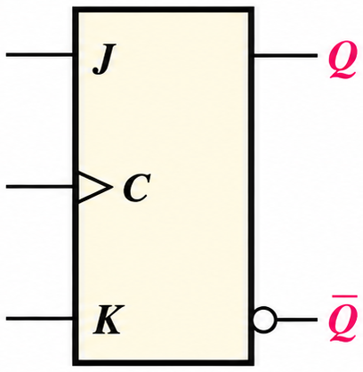
สำหรับตารางค่าความจริงของ negative edge-triggered J-K flip-flop นั้นจะมีความคล้ายกัน เพียงแต่การเปลี่ยนแปลงจะเกิดขึ้นที่ขอบขาลงแทน โดยจะมีตารางค่าความจริงดังตารางที่ 8.6 และมีผังเวลาตัวอย่างแสดงการทำงานของ negative edge-triggered J-K flip-flop ในรูปที่ 8.11 (ก) พร้อมสัญลักษณ์ลอจิกใน (ข)
| อินพุต | เอาต์พุต | ความหมาย | |||
|---|---|---|---|---|---|
| J | K | CLK | Q | Q | |
| 0 | 0 | ↓ | Q0 | Q0 | ไม่มีการเปลี่ยนแปลงสภาวะ (NC) |
| 0 | 1 | ↓ | 0 | 1 | RESET |
| 1 | 0 | ↓ | 1 | 0 | SET |
| 1 | 1 | ↓ | Q0 | Q0 | Toggle |
| ↓ = สัญญาณนาฬิกาเปลี่ยนจาก HIGH เป็น LOW Q0 = ระดับสัญญาณเอาต์พุตก่อนการเปลี่ยนแปลงของสัญญาณนาฬิกา | |||||
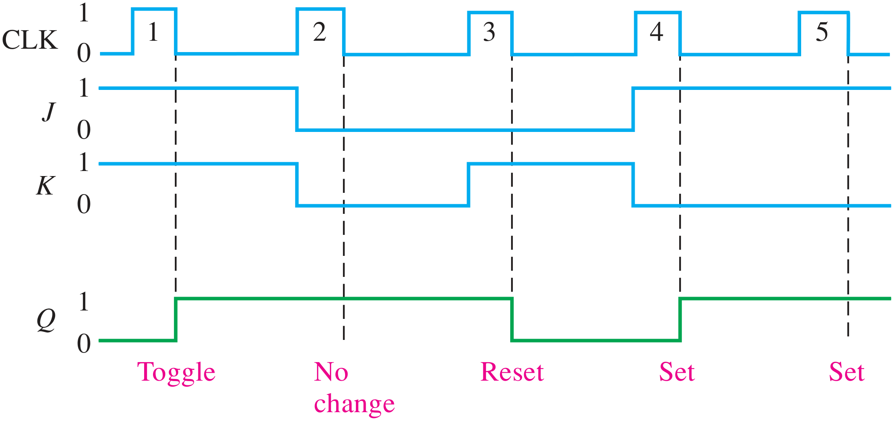
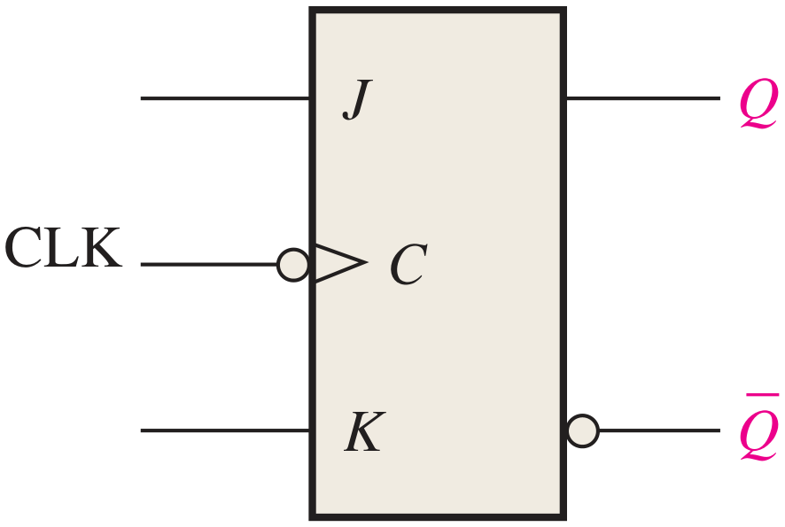
8.2.5 วงจร Flip-Flop ที่มีขาสัญญาณในการทำ Asynchronous Preset และ Clear
สำหรับวงจร flip-flop ที่ได้เรียนมาในข้างต้น ขาอินพุตต่าง ๆ ไม่ว่าจะเป็น S-R, D และ J-K ต่างก็เรียกว่าเป็นขาสัญญาณอินพุตแบบ synchronous เนื่องจากข้อมูลขาเข้าจะถูกถ่ายทอดไปยังเอาต์พุตของ flip-flop นั้น ๆ เฉพาะเวลาที่มีการ trigger ด้วยขอบขาที่ระบุเอาไว้เท่านั้น ซึ่งจะทำงาน synchronize กับสัญญาณนาฬิกาเสมอ
สำหรับ IC ของวงจร flip-flop ส่วนใหญ่จะเพิ่มขาอินพุตที่เป็น asynchronous ด้วย ซึ่งอินพุตดังกล่าวนี้จะมีผลต่อสภาวะของ flip-flop โดยไม่ขึ้นกับจังหวะสัญญาณนาฬิกา ปกติแล้วจะเป็นขาที่เรียกว่า preset (PRE) และขา clear (CLR) หรือบางผู้ผลิตเรียกชื่อว่า direct set (SD) และขา direct reset (RD) ถ้าทำการป้อนระดับสัญญาณ active ที่ขา preset จะทำให้เอาต์พุตของ flip-flop เป็น 1 ในขณะที่เมื่อป้อนระดับสัญญาณ active ที่ขา clear จะทำให้เอาต์พุตเป็น 0 รูปที่ 8.12 แสดงสัญลักษณ์ลอจิกของ J-K flip-flop ที่มีขา preset และ clear ในรูปนี้มีขาอินพุตเป็น active-LOW กำกับโดย bubble ที่ขาสัญญาณ ทั้งสองขานี้จะต้องมีสัญญาณเป็น HIGH เมื่อต้องการทำงานในแบบ synchronous

ส่วนรูปที่ 8.13 แสดงผังวงจรของ edge-triggered J-K flip-flop ที่มีขาอินพุต preset (PRE) กับ clear (CLR) จะเห็นว่าการเชื่อมต่อของขาอินพุตทั้งสองนี้จะทำให้เกิดผลลัพธ์ที่ไม่สนใจขาสัญญาณอินพุตแบบ synchronous อันได้แก่ J, K และสัญญาณนาฬิกาเลย
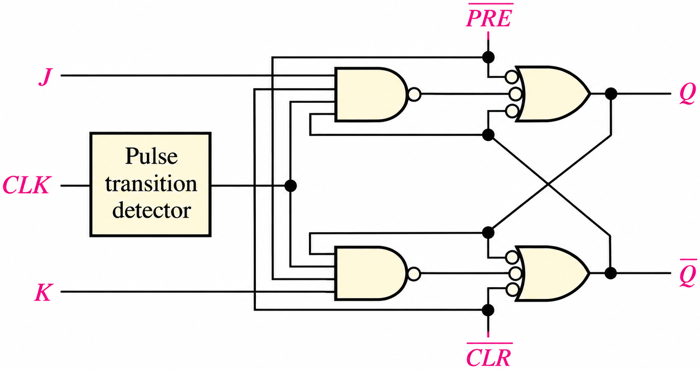
สำหรับ positive edge-triggered J-K flip-flop ที่มี preset กับ clear ในรูป จงเขียนผังเวลาแสดงสัญญาณ Q เมื่อสัญญาณอินพุตเป็นไปตามที่ระบุ ทั้งนี้ให้ Q เริ่มต้นเป็น LOW

แสดงวิธีทำ
- ระหว่างสัญญาณนาฬิกาลูกที่ 1, 2 และ 3 สัญญาณ PRE เป็น LOW ทำให้ฟลิปฟลอปอยู่ที่สภาวะ SET (1) โดยไม่สนใจสัญญาณที่ขา J และ K ที่เป็นสัญญาณแบบ synchronous เลย
- สำหรับสัญญาณนาฬิกาลูกที่ 4, 5, 6 และ 7 จะอยู่ในสถานะ toggle เนื่องจาก J และ K เป็น HIGH ทั้งคู่ (ดูที่วงจร) และในขณะนั้นขา PRE และ CLR เป็น HIGH ทั้งคู่
- สำหรับสัญญาณนาฬิกาลูกที่ 8 และ 9 ขา CLR เป็น LOW ทำให้ฟลิปฟลอปมีสถานะเป็น RESET (0) โดยไม่สนใจสัญญาณแบบ synchronous ว่าจะเป็นอย่างไร
8.3 การประยุกต์ใช้วงจรฟลิปฟลอป
ในหัวข้อนี้จะกล่าวถึงการประยุกต์ใช้วงจรฟลิปฟลอป 3 แบบเพื่อให้เห็นเป็นแนวทางก่อน ส่วนในบทถัดไปจะลงไปในรายละเอียดของเรื่องวงจรนับ (counter) และวงจรรีจิสเตอร์
8.3.1 วงจรเก็บข้อมูลแบบขนาน (Parallel Data Storage)
ระบบดิจิทัลทั่วไปนั้นจำเป็นที่จะต้องมีหน่วยทำงานที่ทำหน้าที่ในการจัดเก็บข้อมูลหลาย ๆ บิต โดยการใช้ฟลิปฟลอปหลาย ๆ ตัวสำหรับปฏิบัติการนี้ ในรูปที่ 8.14 (ก) จะเป็นการแสดงการใช้ฟลิปฟลอปจำนวน 4 ตัว โดยแต่ละสายสัญญาณที่ต่อขนานกัน 4 เส้นนี้จะต่อเข้ากับขาสัญญาณ D ของฟลิปฟลอปแต่ละตัว โดยที่จะทำการเชื่อมต่อขาสัญญาณนาฬิกาของทั้ง 4 ตัวเข้าด้วยกัน เพื่อให้ทุก ๆ ตัวทำการ trigger การทำงานพร้อม ๆ กัน ในตัวอย่างนี้จะใช้ positive edge-triggered flip-flop ซึ่งข้อมูลขาเข้าที่อินพุต D จะถูกเก็บเอาไว้พร้อม ๆ กันที่ขอบขาขึ้นของสัญญาณนาฬิกาดังที่แสดงให้เห็นในรูปส่วน (ข) และจะเห็นว่าขาสัญญาณ reset (R) ต่อเข้ากับขา CLR ร่วมกัน เพื่อใช้สำหรับการ reset ค่าของฟลิปฟลอปให้เป็น 0 ได้พร้อมกันทั้งหมด
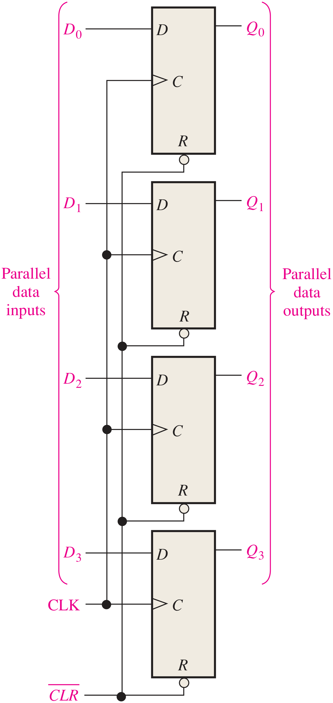
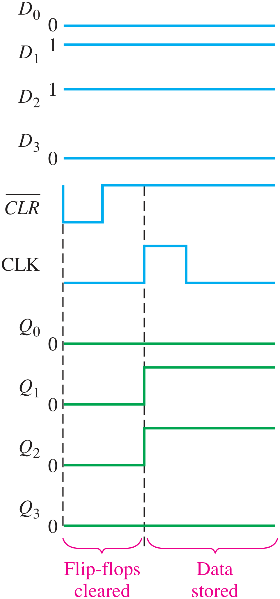
ที่เห็นนี้เป็นเพียงตัวอย่างเล็ก ๆ ที่ใช้ฟลิปฟลอปมาทำเป็นรีจิสเตอร์สำหรับการจัดเก็บข้อมูลสำหรับระบบดิจิทัล รายละเอียดเรื่องของรีจิสเตอร์จะถูกกล่าวถึงในบทต่อ ๆ ไป
8.3.2 วงจรหารความถี่ (Frequency Division)
การประยุกต์ใช้นี้เป็นการนำฟลิปฟลอปไปลดความถี่ของสัญญาณพัลส์ที่มีคาบคงที่ ซึ่งถูกป้อนเข้ามาที่ขาสัญญาณนาฬิกาของ J-K flip-flop โดยให้มี J และ K เป็น 1 ทั้งคู่เพื่อทำงานแบบ toggle ซึ่งจะทำให้เอาต์พุตที่ขา Q ได้สัญญาณสี่เหลี่ยมที่มีความถี่เป็นครึ่งหนึ่งของสัญญาณนาฬิกาที่ป้อนเข้ามา ดังนั้นเมื่อเราใช้ฟลิปฟลอป 1 ตัว เราจะได้วงจรที่เรียกว่า divide-by-2 ดังที่เห็นในรูปที่ 8.15 ซึ่งจะเห็นผังเวลาแสดงการทำงานที่กำกับไว้ในรูปนี้ด้วย


เมื่อเราต้องการหารความถี่เพิ่มขึ้นไปอีก ก็เพียงเพิ่มฟลิปฟลอปไปอีกตัวหนึ่ง โดยใช้เอาต์พุตจากฟลิปฟลอปตัวแรกไปป้อนที่ขา clock ของฟลิปฟลอปตัวที่สองดังที่แสดงให้เห็นในรูปที่ 8.16 ความถี่ที่ได้จาก QA จะถูกหาร 2 ด้วยฟลิปฟลอป B ซึ่งจะทำให้สัญญาณที่ได้จาก QB มีความถี่เป็น 1/4 ของสัญญาณนาฬิกาดั้งเดิม ขอให้รับทราบว่าในรูปผังเวลานี้จะไม่กล่าวถึง propagation delay ที่เกิดขึ้นจริง

ดังนั้นถ้าเราต่อวงจรโดยใช้ฟลิปฟลอปในลักษณะนี้เพิ่มขึ้นเรื่อย ๆ เราจะได้การหารความถี่แบบ 2n โดยที่ n เป็นจำนวนของฟลิปฟลอปที่ใช้ ยกตัวอย่างเช่น เมื่อเราใช้ฟลิปฟลอป 3 ตัวเราจะได้ความถี่หาร 8 และเมื่อใช้ฟลิปฟลอป 4 ตัวเราจะได้ความถี่หาร 16 เป็นต้น
จงเขียนผังเวลาคลื่นสัญญาณของวงจรในรูป เมื่อสัญญาณนาฬิกาขาเข้าเป็นสัญญาณสี่เหลี่ยมที่มีความถี่ 8 kHz ป้อนเข้ายังขา clock ของฟลิปฟลอป A
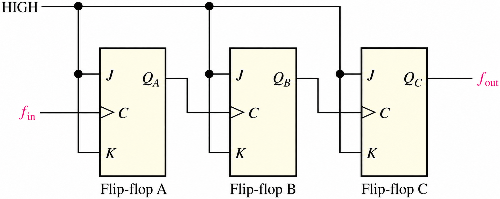
แสดงวิธีทำ
เมื่อต่อฟลิปฟลอป 3 ตัวเข้าด้วยกันดังภาพ เราจะทำการหารความถี่ด้วย 8 (23 = 8) และสัญญาณ fout จะเขียนได้ดังผังเวลาแสดงสัญญาณ ซึ่งจะได้เป็นความถี่ 1 kHz (ฟลิปฟลอปนี้เป็นแบบ positive edge-triggered ดังนั้นทุกการเปลี่ยนจะพิจารณาที่ขอบขาขึ้นดังที่กำกับในรูปด้วยเส้นประ)
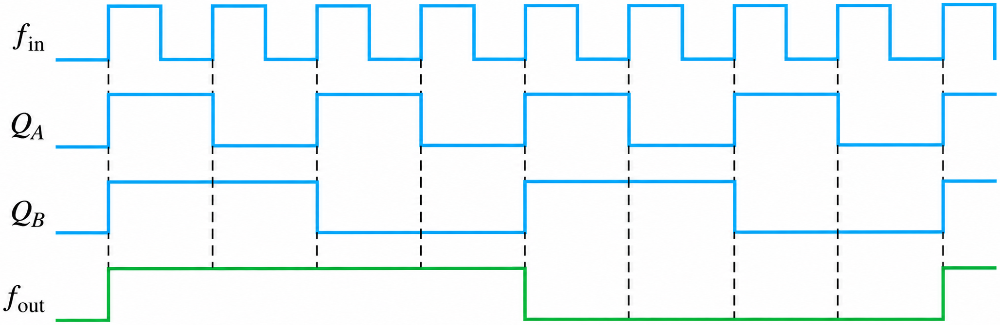
8.3.3 วงจรนับ (Counter)
วงจรนับเป็นวงจรสำคัญในการใช้งานประยุกต์ของฟลิปฟลอปอย่างมาก และเรื่องนี้จะถูกกล่าวในบทถัดไป รูปที่ 8.17 แสดงตัวอย่างของวงจรชนิดนี้ซึ่งใช้ negative edge-triggered J-K flip-flop จำนวน 2 ตัว โดยที่ทั้งสองจะเริ่มที่ RESET ฟลิปฟลอป A จะ toggle สัญญาณเอาต์พุตที่ขอบขาลงในแต่ละพัลส์ ขา Q ของฟลิปฟลอป A จะไปป้อนเป็นสัญญาณนาฬิกาของฟลิปฟลอป B ซึ่งทุกครั้งที่ QA ทำการ toggle จาก HIGH เป็น LOW ฟลิปฟลอป B ก็จะทำการ toggle ทำให้ได้ผลลัพธ์เป็นดังผังเวลาดังรูป
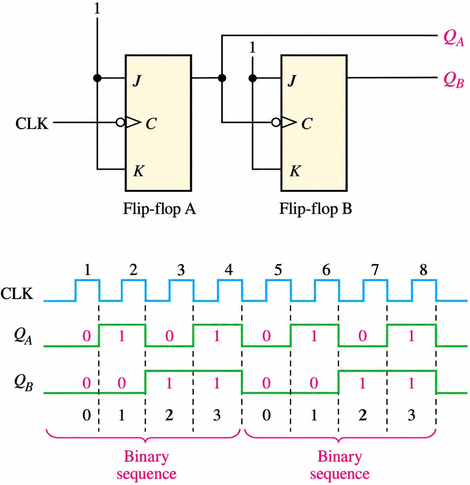
จากรูปเมื่อเราสังเกตดู จะได้ผลลัพธ์ที่ QA และ QB ที่เกิดแบบรูปไบนารีที่เวียนซ้ำกันเป็นลำดับ 00 01 10 11 ซึ่งเป็นการนับ 0 ถึง 3 วนไปเรื่อย ๆ สำหรับรูปที่ 8.18 เป็นวงจรนับ 0–7 ด้วยการใช้ฟลิปฟลอปมาต่อกัน 3 ตัว
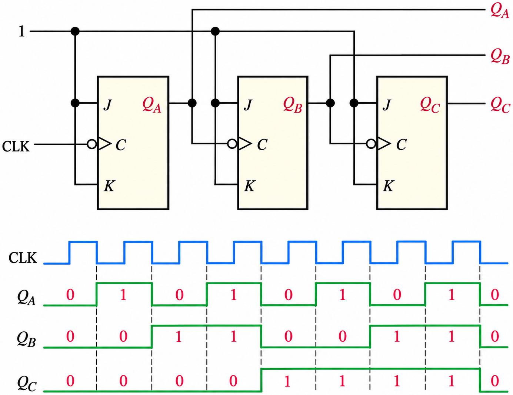
สรุปท้ายบท
- แลทช์เป็นอุปกรณ์ bistable ที่ใช้การป้อนกลับเก็บข้อมูลชั่วคราว S-R latch แบบ active-HIGH สร้างจาก NOR gate ส่วน S-R latch แบบ active-LOW สร้างจาก NAND gate ทั้งคู่มีสภาวะ invalid เป็นจุดบกพร่อง
- Gated latch เพิ่มขา EN ควบคุมการทำงาน ส่วน gated D latch ใช้ inverter ทำให้ S และ R ไม่เคยเป็นค่าเดียวกัน จึงไม่มีสภาวะ invalid
- ฟลิปฟลอปเป็น synchronous bistable ที่เปลี่ยนสถานะเฉพาะที่ขอบขาขึ้นหรือขอบขาลงของสัญญาณนาฬิกา (สัญลักษณ์มี dynamic input indicator และมี bubble สำหรับแบบ negative edge-triggered)
- D flip-flop เก็บข้อมูล 1 บิต ส่วน J-K flip-flop ทำงาน SET, RESET และ NC ได้เหมือน S-R flip-flop แต่กรณี J = K = 1 จะ toggle แทนสภาวะ invalid
- ขา asynchronous preset (PRE) และ clear (CLR) กำหนดเอาต์พุตเป็น 1 หรือ 0 ได้ทันทีโดยไม่ขึ้นกับสัญญาณนาฬิกาและอินพุต J, K
- การประยุกต์ใช้ฟลิปฟลอป ได้แก่ การเก็บข้อมูลแบบขนาน การหารความถี่ด้วย 2n เมื่อต่อฟลิปฟลอป n ตัว และวงจรนับไบนารี
แบบทดสอบท้ายบท
เลือกคำตอบ ระบบจะเฉลยพร้อมคำอธิบายทันที (ไม่มีการบันทึกคะแนน ใช้สำหรับทบทวนด้วยตนเอง)
ปฏิบัติการสัปดาห์ที่ 11 · ฟลิปฟลอปและวงจรหารความถี่
ตามแผนการสอนใน มคอ.3 สัปดาห์ที่ 10 เริ่มเรื่องแลทช์ (ร่วมกับปฏิบัติการ MUX และ 7-segment ของบทที่ 7) และสัปดาห์ที่ 11 ปฏิบัติการฟลิปฟลอป — บันทึกผังเวลาที่วัดได้เทียบกับแบบจำลองบนเว็บทุกข้อ
📋 ใบงานปฏิบัติการที่ 8 (สัปดาห์ที่ 11) · แลทช์ ฟลิปฟลอป และวงจรหารความถี่
- S-R latch: ต่อ S-R latch ด้วย NAND 2 ตัว (7400) และ S-R latch ด้วย NOR 2 ตัว (7402) ทดสอบครบทุกกรณีของตารางที่ 8.1–8.2 · ลองสร้างสภาวะ invalid แล้วปล่อยอินพุตพร้อมกัน สังเกตผล
- สวิตช์กันเด้ง (debounce): ใช้ S-R latch จากข้อ 1 กับสวิตช์ 2 ทาง ป้อนให้วงจรนับ เทียบกับการต่อสวิตช์ตรง (อภิปรายว่าทำไมต้องใช้แลทช์)
- D latch กับ D flip-flop: ป้อน D และสัญญาณนาฬิกาชุดเดียวกันให้ D latch (7475) และ D flip-flop (7474) วัด Q ทั้งสองบนออสซิลโลสโคปและเทียบกับแบบจำลอง “แลทช์ ⇄ ฟลิปฟลอป”
- J-K flip-flop: ใช้ 74LS76 หรือ 74LS112 ทดสอบ SET, RESET, NC, toggle ด้วยสวิตช์ที่ผ่านวงจรกันเด้ง และทดสอบขา PRE / CLR (ตัวอย่างที่ 8.2)
- วงจรหารความถี่: ต่อ J-K flip-flop 3 ตัวแบบ toggle ป้อนนาฬิกา 8 kHz วัดความถี่ที่ QA, QB, QC (ตัวอย่างที่ 8.3) แล้วต่อ Q ทั้งสามเข้า LED เพื่อดูการนับ 0–7 ที่ความถี่ต่ำ
ส่ง: ผังวงจรพร้อมเบอร์ไอซีและขา · ผังเวลาที่วัดได้ · ตารางผลการทดลอง · คำตอบคำถามท้ายการทดลอง (ประเมินในหมวดแบบฝึกหัดและรายงานผลการทดลอง 20%)
👥 โครงงานกลุ่ม · เตรียมรายงานความก้าวหน้า (สัปดาห์ที่ 12 · CLO12)
ถ้าโครงงานต้อง “จำ” สถานะ (นับคะแนน เก็บค่า ตัวจับเวลา) ให้ระบุว่าจะใช้ฟลิปฟลอปชนิดใดและสัญญาณนาฬิกามาจากไหน · เตรียมรายงานความก้าวหน้าและปัญหาที่พบสำหรับสัปดาห์ที่ 12